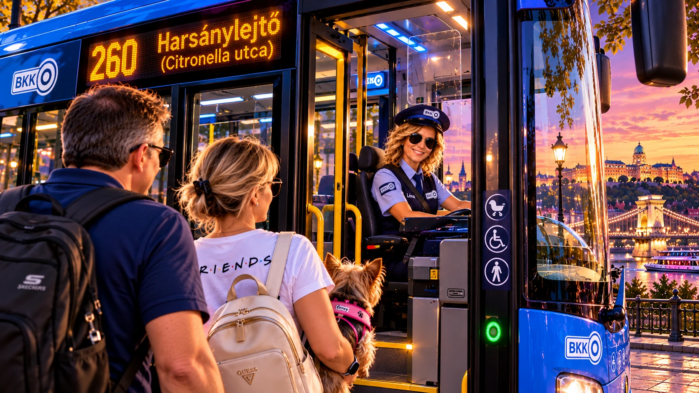

SH9 · SMART TRAVEL · BKK
BKK Smart Control
⭐ My BKK · Kedvenc járataim
Szerkesztés ↗Profilod saját figyelőlistája. Minden járat mellett a hivatalos, mindenkor aktuális menetrend megtekintése.
Kedvencek betöltése…
⏱ Smart Arrival
MegállókIndulás előtt egy pillantás
A saját SH9 Smart Travel térképünkön láthatod a meglévő BKK-járatokat és a hiteles élő járműjelölőket. A megállói indulási idők kijelzése még nincs bekötve.
SH9 Smart Travel térkép🔎 BKK járatkereső
Hivatalos BKK ↗🚦 Forgalmi információk
Menetrendi forrás: BKK hivatalos menetrend. A HealthHub PDF-olvasó az általad megnyitott hivatalos PDF-et a böngésző engedélyével jeleníti meg; automatikusan fel nem oldott vagy blokkolt PDF esetén a hivatalos BKK-oldal az elsődleges út. Sem lejárt PDF-archívum, sem háttérletöltés nincs. A meglévő kedvencek kizárólag a készülék helyi tárolójából származnak.